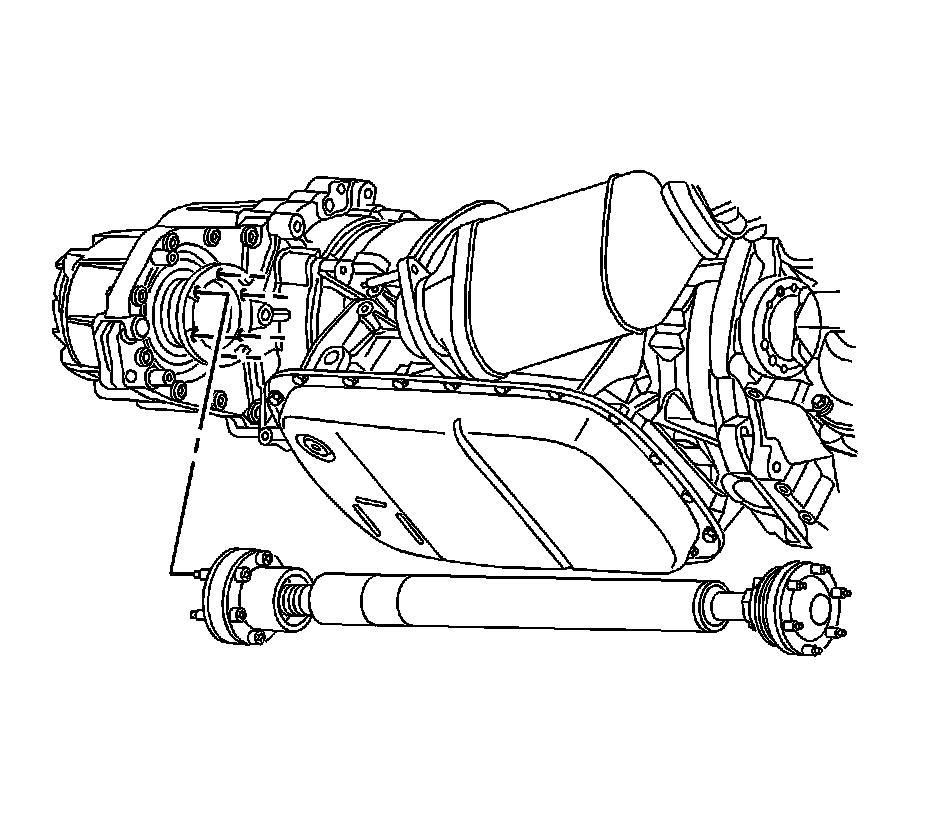

Transfer Case Assembly Replacement
Transfer Case Assembly Replacement
Removal Procedure
1. Drain the transfer case fluid, if necessary. Refer to Transfer Case Fluid Replacement (Transfer Case Fluid Replacement) .
2. Remove the exhaust system. Refer to Exhaust System Replacement (Service and Repair) .
3. Remove the rear propeller shaft. Refer to Rear Propeller Shaft Replacement (RWD) (Rear Propeller Shaft Replacement (RWD)) .

4. Support the transmission with a suitable screw jack and a block of wood.
5. Remove the transmission mount-to-body bolts.
6. Using the jack, lower the transmission enough to access the transmission mount-to-transfer case mounting bolts.

7. Remove the transmission mount-to-transmission case mounting bolts.
8. Remove the transmission mount assembly from the vehicle.
9. Remove the front propeller shaft. Refer to Front Propeller Shaft Replacement (Front Propeller Shaft Replacement) .

Important: Do not remove the jack and block of wood from under the transmission.
10. Using another suitable adjustable jack, support the transfer case.
11. Remove the transfer case bolts.
12. Remove the transfer case.
Installation Procedure
1. Apply grease GM P/N 1051344 (Canadian P/N 993037), or equivalent, on the input splines starting from the front edge to 10 mm inward in a continuous pattern around the inside diameter (ID) of the splines to completely fill the splines.
2. Install the transfer case.
Notice: Refer to Fastener Notice (Fastener Notice) .
3. Install the transfer case-to-transmission bolts.
Tighten the case-to-transmission bolts to 60 N.m (44 lb ft).
4. Remove the adjustable jack from the transfer case.

5. Install the transmission mount assembly. Refer to Transmission Rear Mount Replacement (RWD) (Transmission Rear Mount Replacement (RWD))Transmission Rear Mount Replacement (AWD) (Transmission Rear Mount Replacement (AWD)) .
6. Remove the jack and block of wood from under the transmission.
7. Install the front propeller shaft. Refer to Front Propeller Shaft Replacement (Front Propeller Shaft Replacement) .
8. Install the rear propeller shaft. Refer to Rear Propeller Shaft Replacement (RWD) (Rear Propeller Shaft Replacement (RWD)) .
9. Install the exhaust system. Refer to Exhaust System Replacement (Service and Repair) .
10. Refill the transfer case with fluid. Refer to Transfer Case Fluid Replacement (Transfer Case Fluid Replacement) .